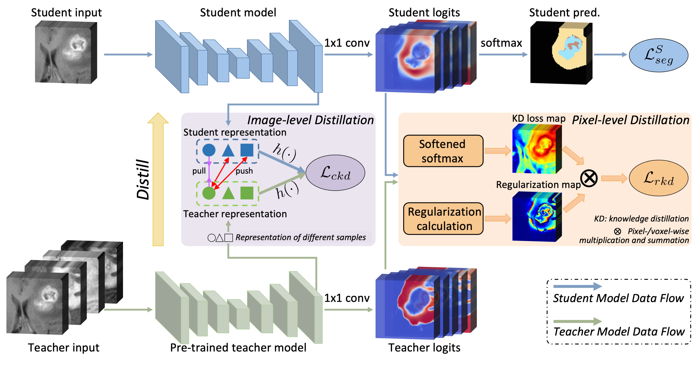

Cheng ChenPh.D.
Dept. of Radiology |
 |


Biography
I am curretnly a postdoctoral research fellow at the Center for Advanced Medical Computing and Analysis, Harvard Medical School/Massachusetts General Hospital, working with Prof. Quanzheng Li. Before that, I have received my Ph.D. degree from the Department of Computer Science and Engineering, The Chinese University of Hong Kong, supervised by Prof. Pheng-Ann Heng and Prof. Qi Dou. Previously, I received my MS from The Johns Hopkins University in 2013, and BS from Zhejiang University in 2011, both with a specialization in biomedical engineering.
My research interests include medical image computing and machine learning.
News
- [09/2023] Our paper on modality-agnostic SAM adaptation is available on arxiv.
- [07/2023] One paper on causality-inspired semi-supervised learning was accepted by ICCV 2023.
- [05/2023] Three papers are early accepted to MICCAI 2023 with one oral.
- [03/2023] Paper on personalized federated learning in medical imaging was accepted by IEEE TMI.
- [02/2023] Paper on diffusion model based brain midline shift quantification was accepted by IPMI.
- [08/2022] Proud to receive the certificate of IEEE TMI Distinguished Reviewer.
- [07/2022] Paper on dynamic learning rate for test-time adaptation was accepted by IEEE TMI.
- [05/2022] Two papers on model generalization were early accepted by MICCAI'22.
- [12/2021] Our paper on single domain generalization for segmentation was accepted by AAAI'22.
- [10/2021] Paper on leveraing privileged multimodal knowledge for unimodal segmentation was accepted by IEEE TMI.
- [09/2021] We won the champion of 2021 MICCAI Federated Brain Tumor Segmentation Challenge (FeTS).
- [23/06/2021] Passed the oral defense and became a Dr.!
- [05/2021] One paper on source-free unsupervised domain adaptation was early accepted by MICCAI'21.
- [03/2021] Our paper on federated domain generalization (FedDG) was accepted by CVPR'21.
- [03/2021] Our paper on relating temporal cues for surgical workflow recognition was accepted to IEEE TMI.
- [02/2020] One paper on unsupervised domain adaptation was accepted by IEEE TMI.
- [08/2019] One paper on robust multimodal learning was accepted by MICCAI'19, with a travel award.
Selected Publications [Google Scholar]
| MA-SAM: Modality-agnostic SAM Adaptation for 3D Medical Image Segmentation. Cheng Chen, Juzheng Miao, Dufan Wu, Zhiling Yan, Sekeun Kim, Jiang Hu, Aoxiao Zhong, Zhengliang Liu, Lichao Sun, Xiang Li, Tianming Liu, Pheng-Ann Heng, Quanzheng Li. Preprint, 2023. |
|

|
Contrastive Masked Image-Text Modeling for Medical Visual Representation Learning. Cheng Chen, Aoxiao Zhong, Dufan Wu, Jie Luo, Quanzheng Li. Medical Image Computing and Computer Assisted Interventions (MICCAI), 2023. (Oral) |
| Single-domain Generalization in Medical Image Segmentation via Test-time Adaptation from Shape Dictionary. Quande Liu, Cheng Chen, Qi Dou, Pheng Ann Heng. AAAI Conference on Artificial Intelligence (AAAI), 2022. [paper][code] |
|
|  | Learning with Privileged Multimodal Knowledge for Unimodal Segmentation. Cheng Chen, Qi Dou, Yueming Jin, Quande Liu, Pheng Ann Heng. IEEE Transactions on Medical Imaging (TMI), 2021. |
| Source-Free Domain Adaptive Fundus Image Segmentation with Denoised Pseudo-Labeling. Cheng Chen, Quande Liu, Yueming Jin, Qi Dou, Pheng Ann Heng. Medical Image Computing and Computer Assisted Interventions (MICCAI), 2021. |
|
| FedDG: Federated Domain Generalization on Medical Image Segmentation via Episodic Learning in Continuous Frequency Space. Quande Liu, Cheng Chen, Jing Qin, Qi Dou, Pheng-Ann Heng IEEE Conference on Computer Vision and Pattern Recognition (CVPR), 2021. |
|

|
Unsupervised Bidirectional Cross-Modality Adaptation via Deeply Synergistic Image and Feature Alignment for Medical Image Segmentation. Cheng Chen, Qi Dou, Hao Chen, Jing Qin, Pheng-Ann Heng. IEEE Transactions on Medical Imaging (TMI), 2020. |
| Robust Multimodal Brain Tumor Segmentation via Feature Disentanglement and Gated Fusion. Cheng Chen, Qi Dou, Yueming Jin, Hao Chen, Jing Qin, Pheng-Ann Heng. Medical Image Computing and Computer Assisted Intervention (MICCAI), 2019. (Graduate Student Travel Award) |
|

|
Synergistic Image and Feature Adaptation: Towards Cross-Modality Domain Adaptation for Medical Image Segmentation. Cheng Chen, Qi Dou, Hao Chen, Jing Qin, Pheng-Ann Heng. Association for the Advancement of Artificial Intelligence (AAAI), 2019. (Oral) (Graduate Student Scholarship) |

|
Semantic-aware Generative Adversarial Nets for Unsupervised Domain Adaptation in Chest X-ray Segmentation. Cheng Chen, Qi Dou, Hao Chen, Pheng-Ann Heng. International Workshop on Machine Learning on Medical Imaging (MLMI), 2018. (Oral) [paper] |

|
Unsupervised Cross-modality Domain Adaptation of Convnets for Biomedical Image Segmentations with Adversarial Loss. Qi Dou, Cheng Ouyang, Cheng Chen, Hao Chen, Pheng-Ann Heng. International Joint Conference on Artificial Intelligence (IJCAI), 2018. (Oral) |
Patent
-
Apparatus and method for motion tracking of at least a portion of a limb.
Cheng Chen, Jim Wang.
WO Patent WO2017005591A1, 2017.
Honors & Awards
| MICCAI'19 Graduate Student Travel Award, 2019 |
| AAAI'19 Student Scholarship, 2019 |
| Finalist EMBC Student Paper Competition, 2013 |
| The Johns Hopkins University BME-MSE Full Scholarship, 2011-2013 |
| Outstanding Graduates of Hangzhou, 2011 |
| Outstanding Undergraduate Thesis of Zhejiang University, 2011 |
Professional Activities
-
Conference/Journal Reviews:
International Conference on Medical Image Computing and Computer-Assisted Intervention (MICCAI) 2021
Medical Imaging with Deep Learning (MIDL) 2021
IEEE Conference on Computer Vision and Pattern Recognition (CVPR) 2021
Thirty-Fifth AAAI Conference on Artificial Intelligence (AAAI) 2021
Medical Image Analysis (MedIA)
IEEE Transactions on Medical Imaging (TMI)
International Journal of Computer Vision (IJCV)
Journal of Biomedical and Health Informatics (JBHI)
IEEE Transactions on Geoscience and Remote Sensing (TGRS)
IEEE Access
Mathematical Problems in Engineering
Teaching
| 2017-2018 | Spring | Linear Algebra and Vector Calculus for Engineers |
| 2017-2018 | Fall | Digital Logic And Systems |

© Cheng Chen | Last updated: May 2021